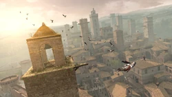

Home
Uma pequena vila nas colinas da Toscana, famosa pelas suas icónicas torres medievais de pedra e pelas paisagens deslumbrantes ao seu redor.
Porquê esta cidade?
Escolhi San Gimignano porque joguei o jogo Assassin's Creed II! No jogo, acompanhamos o protagonista Ezio Auditore por várias cidades italianas, e San Gimignano é uma das regiões mais marcantes onde podemos escalar as suas enormes torres medievais.

Porquê tantas torres?
Durante a Idade Média, as famílias nobres e abastadas da cidade competiam entre si para demonstrar o seu poder, riqueza e prestígio. A forma principal de ostentar esse poder era construindo a torre mais alta possível.
Chegaram a existir 72 torres na cidade! Atualmente, apenas 14 permanecem de pé, o que ainda assim dá a San Gimignano o apelido de "Manhattan da Idade Média".